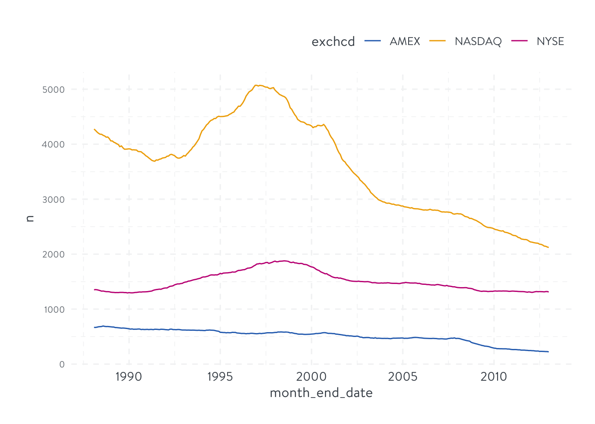
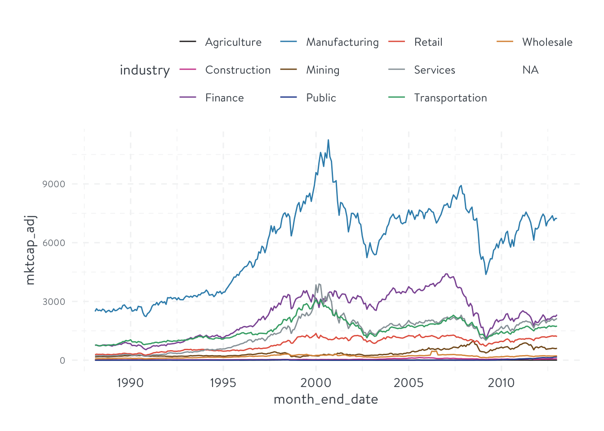

U.S.-based common stocks that are listed on the New York Stock Exchange (NYSE), the American Stock Exchange (AMEX), or the National Association of Securities Dealers Automated Quotations (NASDAQ) system.
CRSP stocks within a date range
SHRCD 10 or 11
EXCHCD 1 or 2 or 3
“sample universe (ID) first, other data later”
For each month t, the sample is constructed by taking all U.S.-based common stocks in the CRSP database as of the end of the given month. These securities can be identified using CRSP’s monthly stock names (msenames) file. The set of all securities that are available as of the end of a month t includes all securities in the msenames file that have a start date (NAMEDT field) less than or equal to the last day of the given month and an end date (NAMEENDT field) that is greater than or equal to the last day of month t.
Note
It’s actually unnecessary to check for the existence of stocks at the end of each month in msenames because msf automatically only include these stocks. This will be shown shortly.
“U.S.-based common stocks”: the subset of these securities that have a share code (SHRCD field in the msenames file) value of either 10 or 11.
mktcap & # of stocks across exchanges and sectors
Market Cap = abs(ALTPRICE * SHROUT)/1000
in the msf table
in millions because SHROUT is in thousands
use ALTPRC instead of PRC because PRC is either missing or set to 0 if there is no trading activity and no bid or ask prices available on the last trading day in the given month. The ALTPRC field is set to the last traded price, or the negative of the average of the bid and ask prices from the last trading day for which the necessary price or bid and ask data are available.
library(tidyverse)
── Attaching core tidyverse packages ──────────────────────── tidyverse 2.0.0 ──
✔ dplyr 1.1.4 ✔ readr 2.1.5
✔ forcats 1.0.0 ✔ stringr 1.5.1
✔ ggplot2 3.5.1 ✔ tibble 3.2.1
✔ lubridate 1.9.3 ✔ tidyr 1.3.1
✔ purrr 1.0.2
── Conflicts ────────────────────────────────────────── tidyverse_conflicts() ──
✖ dplyr::filter() masks stats::filter()
✖ dplyr::lag() masks stats::lag()
ℹ Use the conflicted package (<http://conflicted.r-lib.org/>) to force all conflicts to become errors
library(DBI)library(RPostgres)library(dbplyr)
Attaching package: 'dbplyr'
The following objects are masked from 'package:dplyr':
ident, sql
library(lubridate)source('R/my_functions.R')
wrds <-dbConnect(Postgres(), host ="wrds-pgdata.wharton.upenn.edu", port =9737, dbname ='wrds', user =Sys.getenv('WRDS_USER'), password =Sys.getenv('WRDS_PASS'), sslmode ='require')
# id first, other data latercrsp_msenames <-tbl(wrds, I('crsp_a_stock.msenames'))start_date <-ymd('1988-01-31')end_date <-ymd('2012-12-31')date <-tibble(month_end_date =seq(ceiling_date(start_date, 'month'), ceiling_date(end_date, 'month'), by ='month') -days(1))date_remote <-copy_inline(wrds, date)samp <- date_remote %>%left_join(crsp_msenames, join_by(between(month_end_date, namedt, nameendt))) %>%filter(shrcd %in%c(10, 11))crsp_msf <-tbl(wrds, I('crsp_a_stock.msf'))crsp_samp <- samp %>%mutate(month =floor_date(month_end_date, 'month')) %>%left_join(crsp_msf %>%select(permno, date:retx) %>%mutate(month =floor_date(date, 'month')), join_by(permno, month)) %>%mutate(mktcap =abs(altprc * shrout)/1000)# check: both samp and crsp_samp have 1713961 obs
Stock Exchange Composition
EXCHCD in msenames:
NYSE: 1 or 31
AMEX: 2 or 32
NASDAQ: 3 or 33
CRSP database does not include AMEX stocks prior to July 1962. Because of this, many studies restrict their sample to the period from 1963 through present.
exch_comp <- crsp_samp %>%filter(exchcd %in%c(1L, 2L, 3L)) %>%group_by(exchcd, month_end_date, month) %>%summarise(n =n(), mktcap =sum(mktcap, na.rm = T), .groups ='drop') %>%collect()exch_comp %>%write_csv('data/exch_comp.csv')exch_comp %>%filter(month_end_date ==ymd('2012-12-31'))# using stocks in crsp_msf directlycrsp_msf %>%mutate(month =floor_date(date, 'month')) %>%filter(month ==as.Date('2012-12-01')) %>%inner_join(crsp_msenames, join_by(permno, between(date, namedt, nameendt))) %>%filter(exchcd %in%c(1L, 2L, 3L), shrcd %in%c(10, 11)) %>%group_by(exchcd, month) %>%summarise(n =n())# which is the same as the composition using crsp_samp, indicating that the return data in CRSP msf exactly includes those present at the end of each month in msenames.
exch_comp <-read_csv('data/exch_comp.csv')
Rows: 900 Columns: 5
── Column specification ────────────────────────────────────────────────────────
Delimiter: ","
dbl (3): exchcd, n, mktcap
dttm (1): month
date (1): month_end_date
ℹ Use `spec()` to retrieve the full column specification for this data.
ℹ Specify the column types or set `show_col_types = FALSE` to quiet this message.
exch_comp %>%mutate(exchcd =case_when( exchcd ==1~'NYSE', exchcd ==2~'AMEX', .default ='NASDAQ' )) %>%ggplot(aes(month_end_date, n, color = exchcd)) +geom_line() +theme_hierarchy() + ggsci::scale_color_bmj()

Get CPI (BLS) data from FRED using tidyquant:
We use data for the All Urban Consumer series.
which is CPIAUCNS in FRED data.
library(tidyquant)tq_index_options()tq_index('SP500')tq_exchange_options()tq_get_options()cpi <-tq_get('CPIAUCNS', get ='economic.data', from =floor_date(start_date, 'month'), to = end_date) %>%mutate(month =floor_date(date, 'month'), cpi = price/price[month ==max(month)])cpi %>%write_csv('data/cpi.csv')
cpi <-read_csv('data/cpi.csv')
Rows: 300 Columns: 5
── Column specification ────────────────────────────────────────────────────────
Delimiter: ","
chr (1): symbol
dbl (2): price, cpi
date (2): date, month
ℹ Use `spec()` to retrieve the full column specification for this data.
ℹ Specify the column types or set `show_col_types = FALSE` to quiet this message.
Rows: 3293 Columns: 5
── Column specification ────────────────────────────────────────────────────────
Delimiter: ","
chr (1): industry
dbl (2): n, mktcap
dttm (1): month
date (1): month_end_date
ℹ Use `spec()` to retrieve the full column specification for this data.
ℹ Specify the column types or set `show_col_types = FALSE` to quiet this message.
indu_comp %>%ggplot(aes(month_end_date, n, color = industry)) +geom_line() +theme_hierarchy() + ggsci::scale_color_cosmic()
Warning: Removed 300 rows containing missing values or values outside the scale range
(`geom_line()`).
Warning: Removed 300 rows containing missing values or values outside the scale range
(`geom_line()`).

Returns & Excess Returns
monthly stock returns:
RET in msf for most stocks.
DLRET in msedelist for delisted stocks when available
If a delisting return is unavailable, we rely on the reason for the delisting, as indicated by the DLSTCD field, to determine the return.
If the DLSTCD is 500, 520, between 551 and 573 inclusive, 574, 580, or 584, we take the stock’s return during the delisting month to be −30%.
If the delisting return is not available and DLSTCD has any value other than those mentioned in the previous sentence, we take the return of the stock in the delisting month to be −100%.